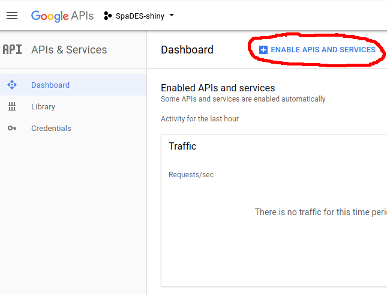
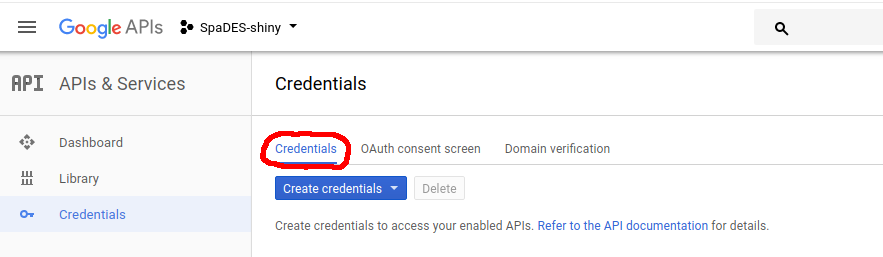

Authenticating with Google
Alex Chubaty
2019-10-03
Source:vignettes/ii-authentication.Rmd
ii-authentication.RmdIntroduction
By default, shiny does not have a mechanism for logging in users, so this level of app personalization is not possible using standard shiny. However, using the googleAuth module we allow app content to be made conditionally available to 3 classes of user:
- anonymous (non-logged in) users;
- logged in users who are not authenticated against a whitelist;
- logged in and authenticated (whitelisted) users.
This module presents the user a “Login” button which redirects to a Google authentication page. After authenticating, an OAuth token (user- and session-specific) is used by the app to determine the user’s Google email address, display name, and whether they are on the app’s access-control whitelist.
This has the advantage of using Google for access control management rather than locally on the shiny server.
In order to use this module for authentication, your app must:
- be configured as a server app via Google apps;
- refer to a file managed by Google Drive for user access control;
- be correctly configured to connect to the Google APIs.
This vignette explains how to do these.
Create and configure a new Google app
Make sure that you are logged into Google and visit the Google APIs project page.
Go to the project dropdown menu, and create a new project:


Complete the setup, and after a few seconds, you will be redirected to the Google API manager.
- Next, we need to enable the ‘Google Plus’ APIs for this project. Click on “Enable APIs and Services”, search for ‘Google+’, and enable.

- Next, click on the “Credentials” tab on the left:

- Navigate to “OAuth consent screen” and fill in the “Product name shown to users” form with the name of your
shinyapplication.

The information you provide in this tab populate the authentication screen that pops up when users click the “Login with Google” link in your app (example).
{kind=link}
- Navigate to the “Credentials” tab at the top.

From the “Create Credentials” dropdown menu, select “OAuth client ID” and select “Web application”" for the application type. Fill in any descriptive name for this client, and in the URLs field add the URL to your app (e.g., http://youApp.example.com). To facilitate testing, also add URLs for http://127.0.0.1:5621 (for use with shiny::runApp(..., port = 5621), and http://127.0.0.1:3838 (for use with shiny-server running on port 3838).
Create a file to use with authentication (whitelist)
The authentication mechanism used by the googleAuth module relies on the file permissions set on a file in Google Drive. Simply create a blank text file (e.g., name_of_your_app.txt) in Google Drive and edit the access control settings to allow only authorized users to download/view this file. You will need the private URL (link) to this file. Assign this URL to a variable in your global.R and pass that as the authFile argument when calling the authGoogle module (see below).
Link your shiny app
You will need to construct your app using all three of the core app files: global.R, server.R, and ui.R. Ensure each these files contain all of the necessary components described below.
global.R
library(googleAuthR)
library(googleID)
options(googleAuthR.scopes.selected = c("https://www.googleapis.com/auth/userinfo.email",
"https://www.googleapis.com/auth/userinfo.profile"))
options(googleAuthR.webapp.client_id = "YOUR-GOOGLE-APP-ID-STRING")
options(googleAuthR.webapp.client_secret = "YOUR-GOOGLE-APP-SECRET")
## the URL to your shiny app
appURL <- "http://yourapp.example.com"
## your private URL to the shared file in Google Drive
authUsers <- c("user1@email.com", "user2@domain.org")
ui.R
-
useShinyjs()in thedashboardBody() -
authGoogleUI("auth_google")insidebarPanel()
References
googleAuthR: Google Authentication Within Shiny- Creating a Shiny app with Google login
- OAuth Scopes: Google Drive
- OAuth Scopes: Google+
- Google Drive API:
files:get
NOTE: the gargle package should eventually supercede the solution here (see https://github.com/r-lib/gargle/issues/14)